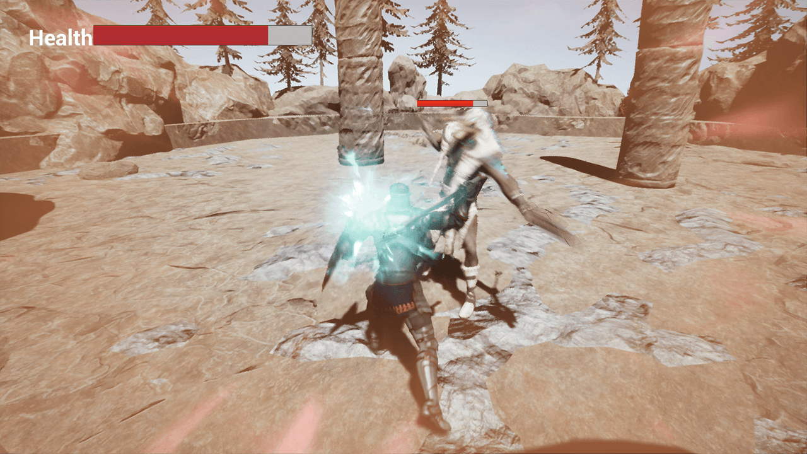
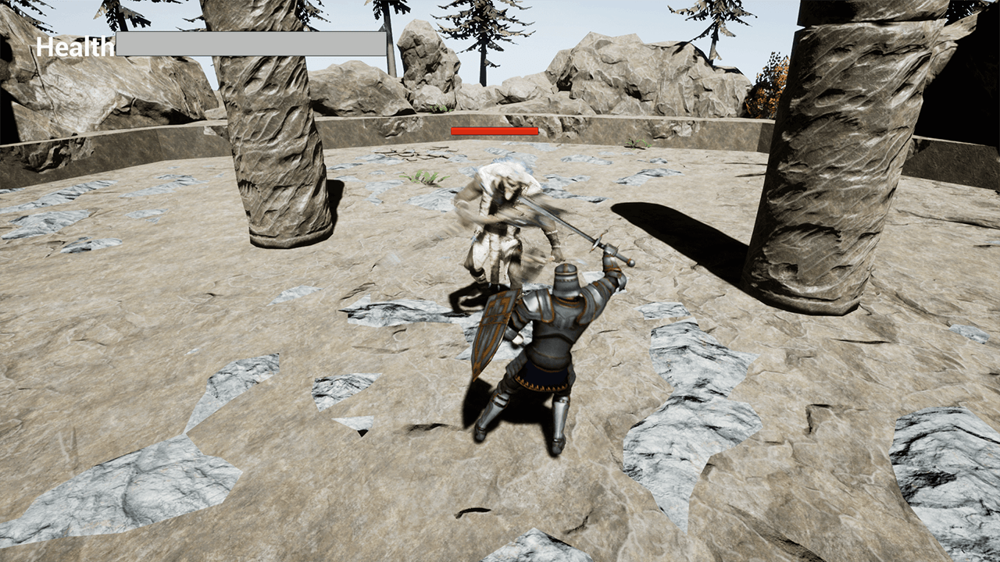
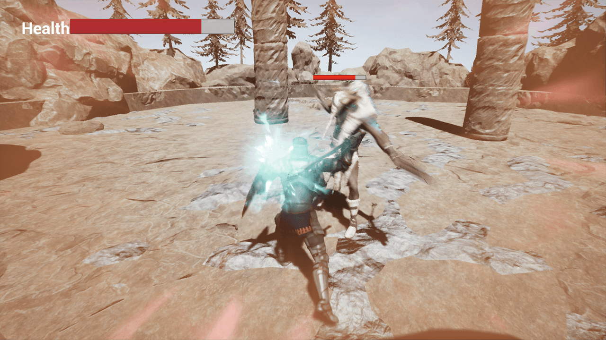
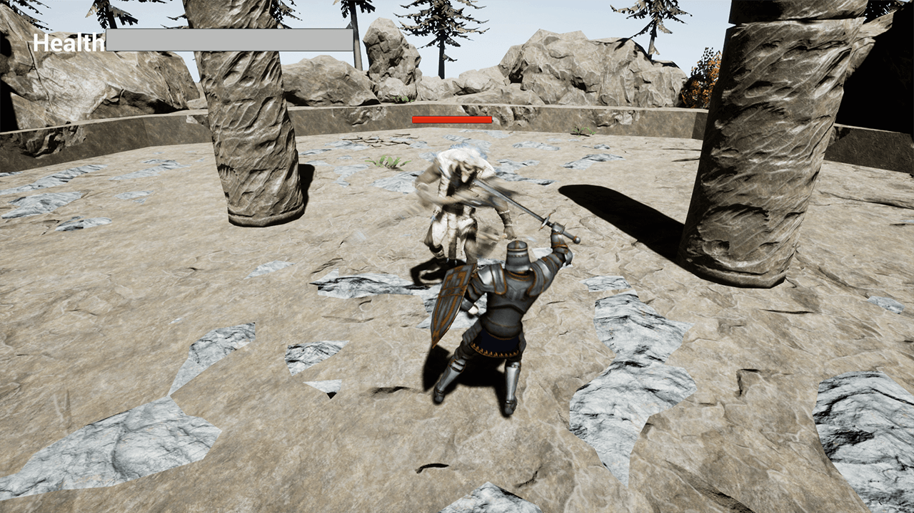

The project
Fast paced combat systems, especially those set in magical/medieval scenery, have always intrigued me. This is why I decided I wanted to try something similar,
on a much smaller scale.
However, while getting my first few animations into UE and trying to get those to work together, I noticed that what I knew of the animation system amounted to... well, basically nothing.
Knowing that making a combat system largely hinged on the animations behind it, I decided to temporarily leave the combat system for what it was and instead started looking into
documentation and tutorials about animating in UE4.
Learning instead of making a game
As this was for an assignment, one that clearly stated we were supposed to make a game, when I let go of the idea of actually making a game, I did this very consciously. I knew that what
I was doing was not within what was asked from us, and I knew I wouldn't have the time to still make a game after I learned all I wanted to learn. Still, I wanted to do this - we had only gotten
some very basic pointers in UE up to that moment, and I wanted to dive deeper into it.
After the assignment (and after exams), I still did some extra research into UE's animation system, trying out some of the more complex things.
All in all, I learned about notifications and its siblings, I looked into montages for combo's, learned about root motion (and what animations were absolutely terrible for it...),
tried out some foot IK, got a handle on blending animations and found out how to properly detect hits.
Links
The Itch.io page of the game.
 


